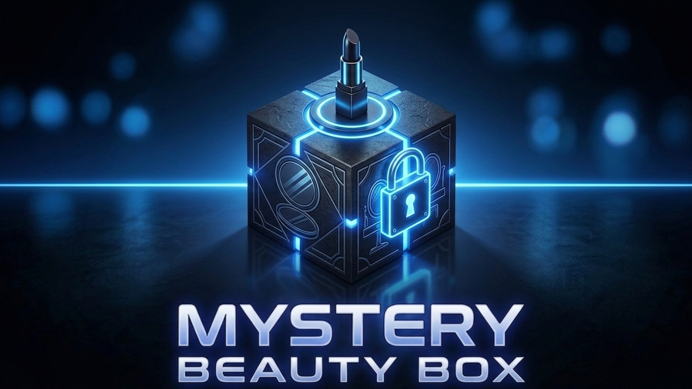
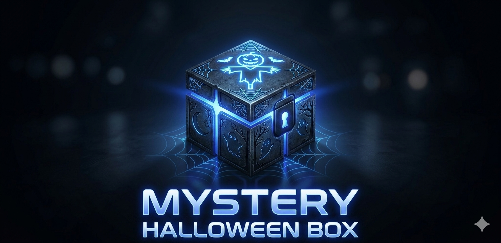
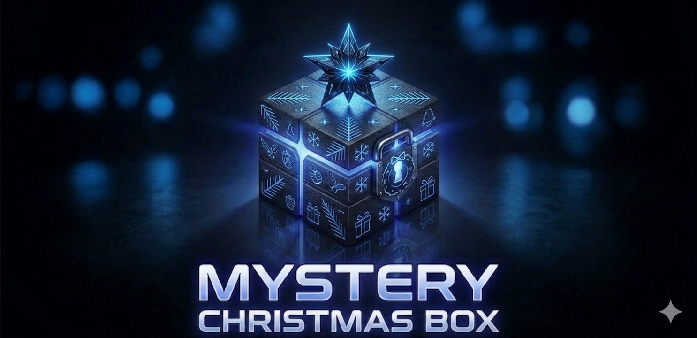
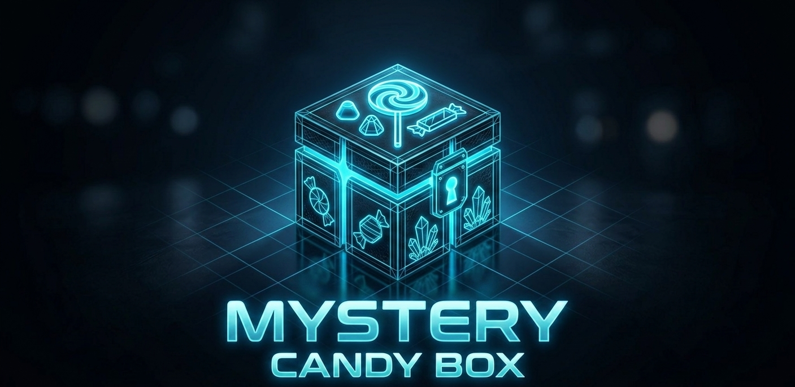

Las colecciones temporales representan una línea experimental dentro de Mystery Box MX.
Estas ediciones son desarrolladas con base en temporadas, celebraciones y fechas relevantes del calendario,
permitiendo adaptar la experiencia de compra a contextos emocionales específicos.
Cada lanzamiento funciona bajo un modelo de disponibilidad limitada, conocido comercialmente como “drop”.
Esto significa que las cajas únicamente permanecen activas durante un periodo reducido, generando una experiencia más exclusiva y dinámica.
El contenido de cada edición es seleccionado considerando tendencias actuales, estética visual, funcionalidad y percepción de valor,
buscando que cada caja mantenga coherencia temática y una experiencia memorable.

Edición especial diseñada para la celebración del Día de la Madre.
Esta colección integra productos enfocados en belleza, estética y cuidado personal,
seleccionados para generar una experiencia de regalo más significativa y emocional.
La caja busca combinar presentación visual, sorpresa y utilidad en una sola experiencia.

Próxima colección temática inspirada en experiencias visuales inmersivas y estética oscura. Actualmente en desarrollo.

Colección de temporada enfocada en experiencias de regalo y artículos seleccionados para fechas decembrinas.
A diferencia de las ediciones temporales, la línea permanente mantiene disponibilidad continua durante el año.
Estas cajas están diseñadas para ofrecer experiencias constantes de descubrimiento y variedad,
permitiendo que el usuario pueda acceder a ellas en cualquier momento.
Actualmente, la categoría de dulces funciona como la principal línea estable de Mystery Box MX,
integrando productos nacionales e internacionales seleccionados bajo criterios de sabor, textura, presentación y experiencia sensorial.

Colección enfocada en experiencias sensoriales y variedad gastronómica. Cada caja contiene una selección aleatoria de productos dulces cuidadosamente organizados para mantener sorpresa y diversidad.
Mystery Box MX nace como un proyecto enfocado en explorar nuevas formas de interacción digital dentro del comercio electrónico.
La propuesta combina diseño web, experiencia de usuario y modelos de sorpresa controlada para construir una plataforma diferente a las tiendas tradicionales.
El objetivo principal del proyecto es analizar cómo factores como la incertidumbre, la expectativa y la presentación visual pueden influir en la percepción de valor del consumidor.
Para ello, se desarrolló una estructura basada en categorías, experiencias temáticas y colecciones temporales.
Además del aspecto comercial, el proyecto funciona como una práctica de diseño y desarrollo web, integrando elementos de HTML, CSS y JavaScript para construir una experiencia funcional, estética e interactiva.